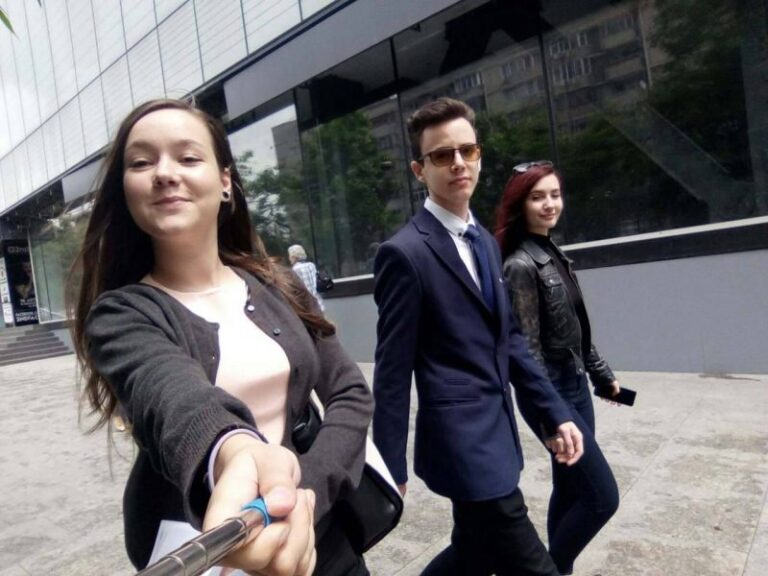

Marele Eveniment: Mafia Ciocolatei

În data de 20 mai 2017 a avut loc Marele Eveniment, activitate pregătită de 3 cercetași din patrula BAC (sau mai bine spus triula) care își încheie parcursul de eXploratori. Mafia Ciocolatei s-a desfășurat în mai multe locații din București. În următoarele rânduri veți afla cum a fost acest program din diferite perspective, mai întai a celor 3 organizatori, apoi a 3 participanți.
„Mafia Ciocolatei este un joc interactiv aș spune, care necesită ca fiecare persoană care ia parte la organizare să se implice și să își arate talentul actoricesc. Și fiindcă nu era vacanță, a fost mai greu să ne organizăm fiecare fiind ocupat cu serviciul, școala, facultatea, alte activități cercetășești de organizat etc. Eu de fel sunt o persoană perfecționistă și am tot stat stresată că nu o să se desfășoare cum trebuie pentru că ba lumea întârzia, ba apareau neprevăzute și nu puteau ajunge, ba o furtună minunată ne-a stricat planul, mereu câte ceva… iar mie chiar mi se pusese pata să iasă perfect, pentru că e un joc antrenant și minuțios, însă totul necesită implicare 100%, care a cam lipsit. Oricum, participanții au fost foarte multumiți – asta pentru că ei nu vedeau „după cortină” – dar dacă ei spun că a fost una dintre cele mai frumoase activități la cercetași… eu nu-i contrazic!” Valentina Petre, organizator
„A fost programul ideal pentru a-mi termina etapa de explorator. Tema a fost extrem de interesantă, jocul bine gandit, iar noi, cei trei “veterani”, am reușit cu brio să-l punem în aplicare. Am reușit să comunicăm și cu restul exploratorilor foarte bine și asta a dus la o experiență cu adevărat de neuitat.” Vlad Vătau, organizator
“Marele eveniment” a fost una din cele mai mari provocări la care am participat în organizare. “Mafia Ciocolatei” a pus stăpânire pe oraș și i-a provocat pe exploratorii noștri, deveniți detectivi pentru o zi, să încerce să o elimine. Eu am participat cu ei pe traseul pe care l-au avut de parcurs sub titulatura de șef al detectivilor, Adara Holmes. I-am ajutat să își pună cap la cap ideile pentru a descoperi “baronul ciocolatei”, creierul mafiei, jucat de Vale. A fost o experiență plăcută, plină de râsete atât la organizarea traseului, cât și în timpul evenimentului, chiar și cu ploaia care ne-a prins pe drum și ne-a unit pe toți sub câteva umbrele. Mă bucur ca am reușit să ducem la bun sfârșit această provocare, împreună, cei 3 din patrula “Bacii” (Valentina, Vlad și cu mine). Ada Ionescu, organizator
„Activitatea a fost una intrigantă care te făcea să conectezi indiciile și să deduci un posibil vinovat /conducător al Mafiei Ciocolatei. M-am distrat încercând să rezolv misterul Mafiei alături de ceilalți.” Lidia Rotaru, participant
„Pe data de 20 mai am luat parte la o activitate a centrului local (“bacul cercetașilor”) organizată de Valentina Petre, Ada Ionescu și Vlad Petru. Activitatea a constat în îndeplinirea unor misiuni prin intermediul unor indicii și a muncii in echipă. Un fel de vânătoare de comori, dar fără comori, pentru că povestea era despre un anume “baron al ciocolatei”, care conducea “mafia ciocolatei”. Scopul jocului a fost să aflăm cine este adevăratul baron, noi având de ales dintre 4 personaje. Activitatea mi s-a părut foarte interesantă și interactivă, noi fiind nevoiți să lucrăm în echipă pentru a descifra enigma. Totul a decurs conform planului (excluzând o anume ciocolată care a fost mâncată din greșeală) și la finalul programului am aflat cu succes cine era “baronul ciocolatei”. Consider că participarea la astfel de activități este un plus adus oricărui cercetaș deoarece testează foarte multe calități cercetașești, cum ar fi: atenția, orientarea, rezolvarea situațiilor dificile și comunicarea. Per total m-am distrat foarte bine alături de ceilalți cercetași si vreau să felicit organizatorii pentru munca și dedicația depusă.” – Dițu Alexandru, participant
”Creativă, amuzantă și modernă ar fi cuvintele care sa descrie activitatea misterioasă de detectivi la care am participat în 20 mai. Prin ecusoane și un cadru de film polițist am reușit să intrăm în lumea întortocheată a ciocolatei și a misterului unei crime pe care am soluționat-o prin indicii și lucrând in echipă.” Cecilia Teme, participant